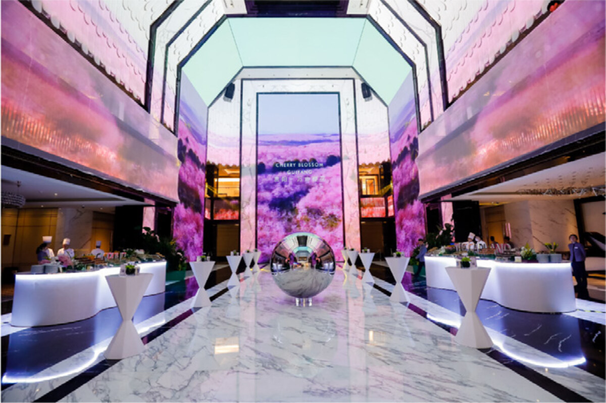

- Designed and built brand visual systems for new commercial projects, including retail, residence, office and hotel assets.
- 设计并建立集团新建商业项目的品牌视觉体系，包括花果园商圈、高端住宅、写字楼、酒店等。
- Built internal visual delivery workflows and templates to improve design response speed.
- 构建内部视觉交付团队，明确设计流程与标准模板，提升设计响应速度。
- Supported communication and marketing execution for Galeries Lafayette Guiyang launch activity.
- 助导法国高端品牌老佛爷百货贵阳落地项目的传播策略与营销执行。
